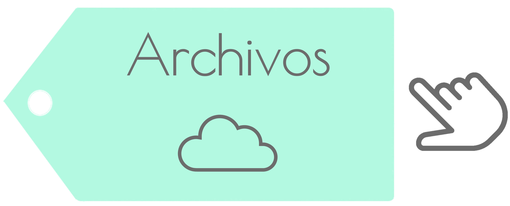

Recurso Didáctico Digital
Unidad 5: métodos de evaluación de proyectos de inversión de la UA Finanzas Empresariales
Este recurso didáctico digital fue elaborado por curaduría de contenidos con información adaptada y recuperada de manera intacta de obras de distintos autores, por consiguiente, son citados en el apartado fuentes de consulta y con su respectiva referencia a lo largo de los textos, respetando así, su autoría para el desarrollo de este recurso.

Material de apoyo
En el siguiente enlace de Google Drive, encontrarás el material de apoyo que te servirá de ayuda para comprender o reforzar los conocimientos necesarios para esta unidad de aprendizaje:

Recurso Didáctico Digital Unidad 5: métodos de evaluación de proyectos de inversión de la UA Finanzas Empresariales por M. en A. Eduardo Rodríguez Flores, M. en C. Josefina Hernández Jaime & Dra. Yasmín Ivette Jiménez Galán se distribuye bajo una Licencia Creative Commons Atribución-NoComercial-CompartirIgual 4.0 Internacional.
Basada en una obra en https://ssolaphi.github.io/index.html.